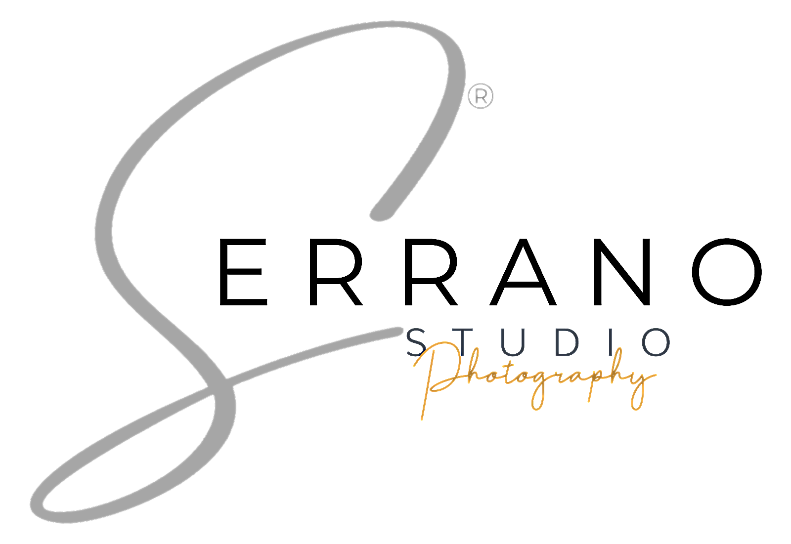

Portfolio · Wedding
Wedding
A calm, observant record of the day, from getting ready through the reception.

More photographs from this category are on the way.

JuanSerranoA calm, observant record of the day, from getting ready through the reception.
More photographs from this category are on the way.